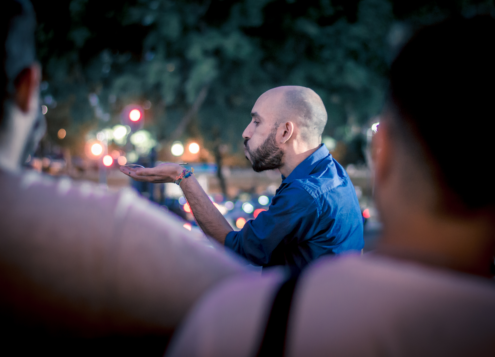
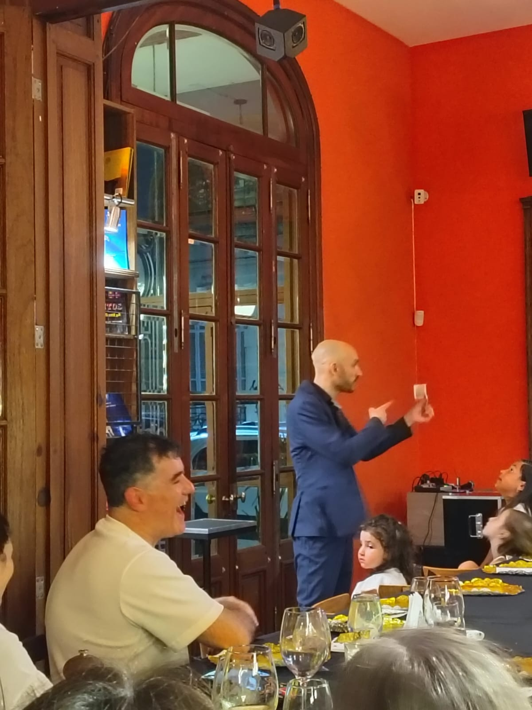
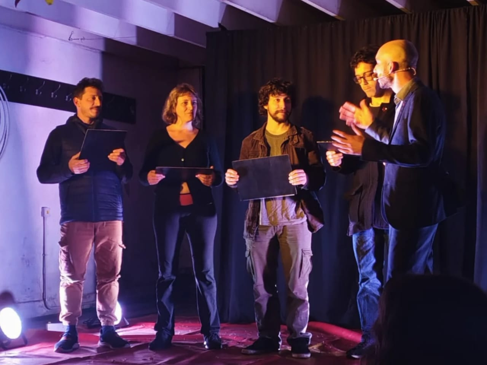

Magia para casamientos
Una propuesta de magia y mentalismo para compartir con los invitados durante la celebración.
Magia que acompaña la celebración
La magia puede incorporarse a diferentes momentos de un casamiento, adaptándose al ritmo del evento, al espacio y a las características de los invitados.
Desde magia de cerca durante la recepción y el cóctel hasta un espectáculo para compartir con todos, la propuesta busca generar participación, sorpresa e interacción sin interferir con el desarrollo de la celebración.
Cada formato se adapta a las características de la ocasión para que la magia forme parte naturalmente del evento.

Magia cerca de los invitados
Durante la recepción o el cóctel, Mati interactúa directamente con los invitados y realiza diferentes experiencias de magia y mentalismo en pequeños grupos.
La propuesta se integra naturalmente al momento, permitiendo que los invitados continúen conversando, circulando y disfrutando de la celebración.
Cada grupo puede vivir experiencias diferentes, haciendo que la magia suceda de manera cercana y participativa.
Conocé la propuesta de magia de cerca →
Un espectáculo para compartir
Cuando se busca reunir a todos los invitados, la magia puede convertirse en un espectáculo para compartir con todo el público.
Ilusionismo, magia visual, mentalismo, participación y humor se combinan en una presentación pensada para público adulto.
Diferentes invitados son invitados a participar y convertirse en protagonistas de lo que sucede frente a todos.
Conocé el show de salón y escena →
Pensamientos, decisiones y coincidencias
El mentalismo aporta una forma diferente de participación, trabajando con pensamientos, elecciones, decisiones y predicciones.
Los propios invitados forman parte de las experiencias y sus decisiones se convierten en parte de lo que sucede.
Conocé la propuesta de mentalismo →
Una propuesta adaptable
La magia puede incorporarse a diferentes momentos de la celebración, dependiendo del formato y de la dinámica del evento.
- Recepción de invitados
- Cóctel
- Cena y celebración
- Momentos de espera
- Show para todos los invitados
- Celebraciones privadas
Magia integrada a la celebración
La propuesta se adapta al espacio, al momento de la celebración y a la cantidad de invitados, buscando que la magia se integre naturalmente al evento.
¿Estás organizando tu casamiento?
Consultá disponibilidad y contame cómo estás pensando la celebración.
Consultar disponibilidad